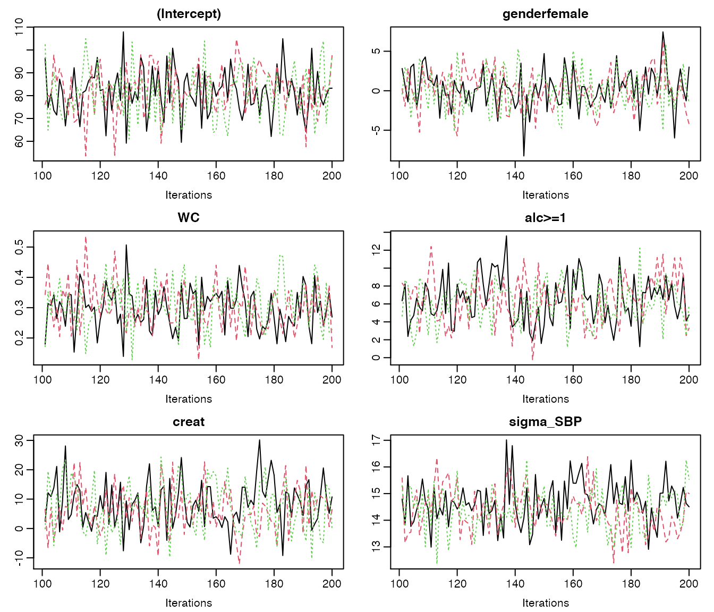
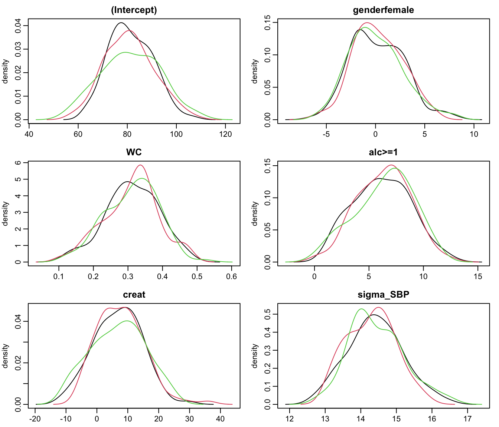
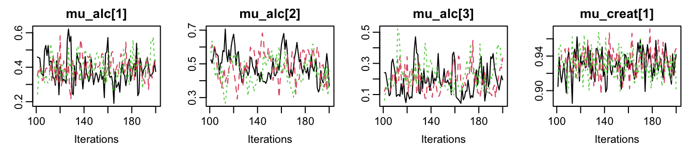
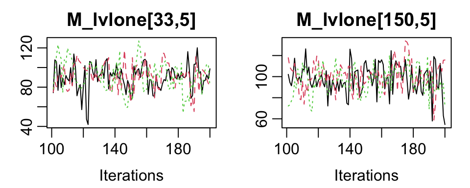
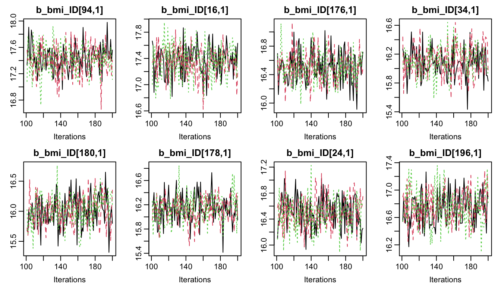
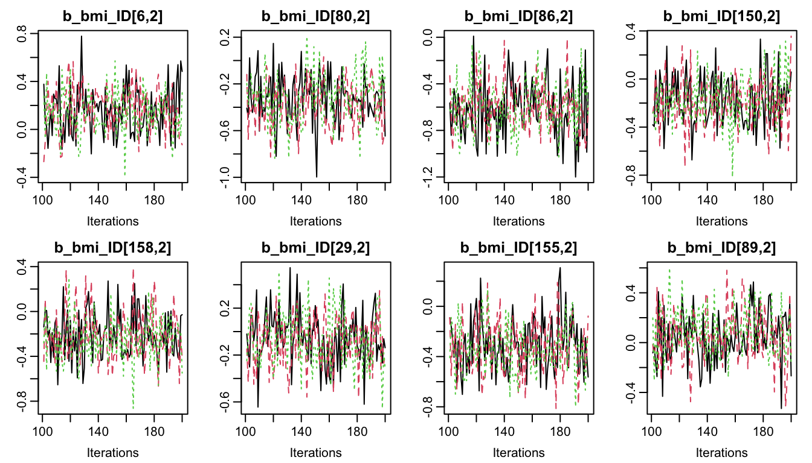

vignettes/SelectingParameters.Rmd
SelectingParameters.RmdIn this vignette, we use the NHANES data for examples in cross-sectional data and the dataset simLong for examples in longitudinal data. For more info on these datasets, check out the vignette Visualizing Incomplete Data, in which the distribution of variables and missing values in both sets is explored.
Note:
In several of the examples we use n.adapt = 0 (and n.iter = 0, which is the default) in order to prevent the MCMC sampling to reduce computational some time. progress.bar = 'none' prevents printing of the progress of the MCMC sampling, which results in lengthy output in the vignette, but is useful in practice.
JointAI uses JAGS for performing the MCMC (Markov Chain Monte Carlo) sampling. Since JAGS only saves the values of MCMC chains for those parameters/variables for which the user has specified that they should be monitored, this is also the case in JointAI.
For this purpose, the main functions *_imp() have an argument monitor_params.
monitor_params takes a named list (often a named vector also works) with the following possible entries:
| name/key word | what is monitored |
|---|---|
analysis_main |
betas and sigma_main, tau_main (in beta regression) or shape_main (in parametric survival models), D_main (in multi-level models) and basehaz (in proportional hazards models) |
analysis_random |
ranef_main, D_main, invD_main, RinvD_main
|
other_models |
alphas, tau_other, gamma_other, delta_other
|
imps |
imputed values |
betas |
regression coefficients of the main analysis model(s) |
tau_main |
precision of the residuals from the analysis model(s) |
sigma_main |
standard deviation of the residuals from the analysis model(s) |
gamma_main |
intercepts in ordinal main model |
delta_main |
increments of ordinal intercepts in main model(s) |
ranef_main |
random effects of the analysis model(s) |
D_main |
covariance matrix of the random effects of the main model(s) |
invD_main |
inverse of D_main
|
RinvD_main |
scale matrix in Wishart prior for invD_main
|
alphas |
regression coefficients in the covariate models |
tau_other |
precision parameters of the residuals from covariate models |
gamma_other |
intercepts in ordinal covariate models |
delta_other |
increments of ordinal intercepts in covariate models |
ranef_other |
random effects of the covariate model(s) |
D_other |
covariance matrix of the random effects of the covariate model(s) |
invD_other |
inverse of D_other
|
RinvD_other |
scale matrix in Wishart prior for invD_other
|
other |
additional parameters |
Each of the key words works as a switch, except for other, which should be a vector of character strings.
The default setting is monitor_params = c(analysis_main = TRUE), i.e., only the main parameters of the analysis model are monitored, and monitoring is switched off for all other parameters.
The main parameters are the regression coefficients of the analysis model (beta) and potentially the residual standard deviation, for example in linear or Gamma models, the second parameter in a beta distribution (parametrized with \(\mu\) and \(\tau\) instead of two shape parameters), the variance-covariance matrices of random effects used in the main models, the shape parameter in a parametric Weibull survival model, and the coefficients used in the spline specification of the baseline hazard of proportional hazards survival models.
The function parameters() returns the parameters that are specified to be followed (even for models where no MCMC sampling was performed, i.e. when n.iter = 0 and n.adapt = 0).
For example:
lm1 <- lm_imp(SBP ~ gender + WC + alc + creat, data = NHANES, n.adapt = 0) parameters(lm1) #> outcome outcat varname coef #> 1 SBP <NA> (Intercept) beta[1] #> 2 SBP <NA> genderfemale beta[2] #> 3 SBP <NA> WC beta[3] #> 4 SBP <NA> alc>=1 beta[4] #> 5 SBP <NA> creat beta[5] #> 6 <NA> <NA> <NA> sigma_SBP
The column outcome refers to the response variable of a particular model, to distinguish between the regression coefficients in different sub-models, and the column outcat will contain the category of the response variable that a particular linear predictor corresponds to in multinomial logit models.
To generate (multiple) imputed datasets that can be used for further analyses, the imputed values need to be monitored. This can be done by setting monitor_params = c(imps = TRUE).
lm2 <- lm_imp(SBP ~ age + WC + alc + smoke + occup, data = NHANES, n.adapt = 0, monitor_params = c(imps = TRUE, analysis_main = FALSE) ) parameters(lm2) #> outcome outcat varname coef #> 1 NA NA NA M_lvlone[1,2] #> 2 NA NA NA M_lvlone[7,2] #> 3 NA NA NA M_lvlone[8,2] #> 4 NA NA NA M_lvlone[12,2] #> 5 NA NA NA M_lvlone[13,2] #> 6 NA NA NA M_lvlone[21,2] #> 7 NA NA NA M_lvlone[22,2] #> 8 NA NA NA M_lvlone[31,2] #> 9 NA NA NA M_lvlone[33,2] #> 10 NA NA NA M_lvlone[34,2] #> 11 NA NA NA M_lvlone[39,2] #> 12 NA NA NA M_lvlone[49,2] #> 13 NA NA NA M_lvlone[66,2] #> 14 NA NA NA M_lvlone[67,2] #> 15 NA NA NA M_lvlone[80,2] #> 16 NA NA NA M_lvlone[86,2] #> 17 NA NA NA M_lvlone[91,2] #> 18 NA NA NA M_lvlone[92,2] #> 19 NA NA NA M_lvlone[105,2] #> 20 NA NA NA M_lvlone[111,2] #> 21 NA NA NA M_lvlone[115,2] #> 22 NA NA NA M_lvlone[118,2] #> 23 NA NA NA M_lvlone[120,2] #> 24 NA NA NA M_lvlone[127,2] #> 25 NA NA NA M_lvlone[132,2] #> 26 NA NA NA M_lvlone[139,2] #> 27 NA NA NA M_lvlone[146,2] #> 28 NA NA NA M_lvlone[149,2] #> 29 NA NA NA M_lvlone[152,2] #> 30 NA NA NA M_lvlone[163,2] #> 31 NA NA NA M_lvlone[165,2] #> 32 NA NA NA M_lvlone[169,2] #> 33 NA NA NA M_lvlone[180,2] #> 34 NA NA NA M_lvlone[185,2] #> 35 NA NA NA M_lvlone[6,3] #> 36 NA NA NA M_lvlone[16,3] #> 37 NA NA NA M_lvlone[24,3] #> 38 NA NA NA M_lvlone[27,3] #> 39 NA NA NA M_lvlone[45,3] #> 40 NA NA NA M_lvlone[57,3] #> 41 NA NA NA M_lvlone[58,3] #> 42 NA NA NA M_lvlone[60,3] #> 43 NA NA NA M_lvlone[61,3] #> 44 NA NA NA M_lvlone[65,3] #> 45 NA NA NA M_lvlone[66,3] #> 46 NA NA NA M_lvlone[70,3] #> 47 NA NA NA M_lvlone[80,3] #> 48 NA NA NA M_lvlone[81,3] #> 49 NA NA NA M_lvlone[85,3] #> 50 NA NA NA M_lvlone[88,3] #> 51 NA NA NA M_lvlone[89,3] #> 52 NA NA NA M_lvlone[90,3] #> 53 NA NA NA M_lvlone[101,3] #> 54 NA NA NA M_lvlone[104,3] #> 55 NA NA NA M_lvlone[116,3] #> 56 NA NA NA M_lvlone[133,3] #> 57 NA NA NA M_lvlone[137,3] #> 58 NA NA NA M_lvlone[143,3] #> 59 NA NA NA M_lvlone[168,3] #> 60 NA NA NA M_lvlone[170,3] #> 61 NA NA NA M_lvlone[180,3] #> 62 NA NA NA M_lvlone[186,3] #> 63 NA NA NA M_lvlone[16,4] #> 64 NA NA NA M_lvlone[99,4] #> 65 NA NA NA M_lvlone[123,4] #> 66 NA NA NA M_lvlone[156,4] #> 67 NA NA NA M_lvlone[158,4] #> 68 NA NA NA M_lvlone[166,4] #> 69 NA NA NA M_lvlone[172,4] #> 70 NA NA NA M_lvlone[33,5] #> 71 NA NA NA M_lvlone[150,5]
JointAI uses separate data matrices per level in the hierarchy of a multi-level model. The lowest level (and only level for models with no hierarchical structure) is called lvlone, the other levels are named based on the corresponding grouping/id variables.
For categorical variables the original variable as well as the corresponding dummy variables are stored in the matrices. The same is the case for interaction terms and transformations of variables.
head(lm2$data_list$M_lvlone) #> SBP alc occup smoke WC (Intercept) age alc>=1 smokeformer #> 10 108.0000 NA 1 1 99.0 1 35 NA NA #> 14 105.3333 0 1 1 82.7 1 38 NA NA #> 41 110.0000 0 3 1 94.9 1 78 NA NA #> 77 106.0000 1 2 1 82.4 1 23 NA NA #> 91 114.6667 0 3 1 93.1 1 40 NA NA #> 105 139.3333 1 NA 3 105.4 1 54 NA NA #> smokecurrent occuplooking for work occupnot working #> 10 NA NA NA #> 14 NA NA NA #> 41 NA NA NA #> 77 NA NA NA #> 91 NA NA NA #> 105 NA NA NA
The parameters of the models for the incomplete variables can be selected with monitor_params = c(other_models = TRUE). This will set monitors for the regression coefficients (alpha) and other parameters, such as precision (tau_*) and intercepts & increments (gamma_* and delta_*) in cumulative logit models.
lm3 <- lm_imp(SBP ~ age + WC + alc + smoke + occup, data = NHANES, n.adapt = 0, monitor_params = c(other_models = TRUE, analysis_main = FALSE) ) parameters(lm3) #> outcome outcat varname coef #> 1 alc <NA> (Intercept) alpha[1] #> 2 alc <NA> age alpha[2] #> 3 alc <NA> WC alpha[3] #> 4 alc <NA> smokeformer alpha[4] #> 5 alc <NA> smokecurrent alpha[5] #> 6 alc <NA> occuplooking for work alpha[6] #> 7 alc <NA> occupnot working alpha[7] #> 8 occup occuplooking for work (Intercept) alpha[8] #> 9 occup occuplooking for work age alpha[9] #> 10 occup occuplooking for work WC alpha[10] #> 11 occup occuplooking for work smokeformer alpha[11] #> 12 occup occuplooking for work smokecurrent alpha[12] #> 13 occup occupnot working (Intercept) alpha[13] #> 14 occup occupnot working age alpha[14] #> 15 occup occupnot working WC alpha[15] #> 16 occup occupnot working smokeformer alpha[16] #> 17 occup occupnot working smokecurrent alpha[17] #> 18 smoke <NA> age alpha[18] #> 19 smoke <NA> WC alpha[19] #> 20 WC <NA> (Intercept) alpha[20] #> 21 WC <NA> age alpha[21] #> 22 <NA> <NA> <NA> gamma_smoke #> 23 <NA> <NA> <NA> sigma_WC
An overview of all models that form part of the joint model, including the names of the parameters and the hyper-parameters can be obtained with
list_models(lm2) #> Linear model for "SBP" #> family: gaussian #> link: identity #> * Predictor variables: #> (Intercept), age, WC, alc>=1, smokeformer, smokecurrent, occuplooking #> for work, occupnot working #> * Regression coefficients: #> beta[1:8] (normal prior(s) with mean 0 and precision 1e-04) #> * Precision of "SBP" : #> tau_SBP (Gamma prior with shape parameter 0.01 and rate parameter 0.01) #> #> #> Binomial model for "alc" #> family: binomial #> link: logit #> * Reference category: "<1" #> * Predictor variables: #> (Intercept), age, WC, smokeformer, smokecurrent, occuplooking for #> work, occupnot working #> * Regression coefficients: #> alpha[1:7] (normal prior(s) with mean 0 and precision 1e-04) #> #> #> Multinomial logit model for "occup" #> * Reference category: "working" #> * Predictor variables: #> (Intercept), age, WC, smokeformer, smokecurrent #> * Regression coefficients: #> occuplooking for work: alpha[8:12] #> occupnot working: alpha[13:17] (normal prior(s) with mean 0 and precision 1e-04) #> #> #> Cumulative logit model for "smoke" #> * Reference category: "never" #> * Predictor variables: #> age, WC #> * Regression coefficients: #> alpha[18:19] (normal prior(s) with mean 0 and precision 1e-04) #> * Intercepts: #> - never: gamma_smoke[1] (normal prior with mean 0 and precision 1e-04) #> - former: gamma_smoke[2] = gamma_smoke[1] + exp(delta_smoke[1]) #> * Increments: #> delta_smoke[1] (normal prior(s) with mean 0 and precision 1e-04) #> #> #> Linear model for "WC" #> family: gaussian #> link: identity #> * Predictor variables: #> (Intercept), age #> * Regression coefficients: #> alpha[20:21] (normal prior(s) with mean 0 and precision 1e-04) #> * Precision of "WC" : #> tau_WC (Gamma prior with shape parameter 0.01 and rate parameter 0.01)
Imputed datasets can be extracted and exported with the function get_MIdat(). A completed dataset is created by taking the imputed values from a randomly chosen iteration of the MCMC sample (transforming them back to the original scale, if scaling had been performed during the MCMC sampling) and filling them into the original, incomplete data.
get_MIdat() returns a long-format data.frame containing the imputed datasets (and possibly the original data) stacked onto each other. The imputation number is given in the variable Imputation_, column .id contains a newly created id variable for each observation in cross-sectional data (multi-level data should already contain an id variable).
get_MIdat() takes the arguments:
| argument | explanation |
|---|---|
object |
‘an object of class ’JointAI’ |
m |
number of datasets to be created |
include |
logical; should the original data be included? |
start |
the first iteration that may be randomly chosen (i.e., all previous iterations are discarded as burn-in) |
minspace |
minimum number of iterations between iterations chosen as imputed values |
seed |
optional seed value in order to make the random selection of iterations reproducible |
export_to_SPSS |
logical; should the datasets be exported to SPSS, i.e., written as .txt and .sps file? If export_to_SPSS = FALSE (default) the imputed data is only returned data.frame
|
resdir |
directory the files are exported to |
filename |
the name of the .txt and .sps files |
For mixed models, analysis_main also includes the random effects covariance matrix D:
lme1 <- lme_imp(bmi ~ age + EDUC, random = ~age | ID, data = simLong, n.adapt = 0) parameters(lme1) #> outcome outcat varname coef #> 1 bmi <NA> (Intercept) beta[1] #> 2 bmi <NA> EDUCmid beta[2] #> 3 bmi <NA> EDUClow beta[3] #> 4 bmi <NA> age beta[4] #> 5 <NA> <NA> <NA> sigma_bmi #> 6 <NA> <NA> <NA> D_bmi_ID[1,1] #> 7 <NA> <NA> <NA> D_bmi_ID[1,2] #> 8 <NA> <NA> <NA> D_bmi_ID[2,2]
Setting analysis_random = TRUE will switch on monitoring for the random effects (ranef), random effects covariance matrix (D), inverse of the random effects covariance matrix (invD) and the diagonal of the scale matrix of the Wishart-prior of invD (RinvD).
lme2 <- lme_imp(bmi ~ age + EDUC, random = ~age | ID, data = simLong, n.adapt = 0, monitor_params = c(analysis_random = TRUE)) parameters(lme2) #> outcome outcat varname coef #> 1 bmi <NA> (Intercept) beta[1] #> 2 bmi <NA> EDUCmid beta[2] #> 3 bmi <NA> EDUClow beta[3] #> 4 bmi <NA> age beta[4] #> 5 <NA> <NA> <NA> sigma_bmi #> 6 <NA> <NA> <NA> b_bmi_ID #> 7 <NA> <NA> <NA> invD_bmi_ID[1,1] #> 8 <NA> <NA> <NA> invD_bmi_ID[1,2] #> 9 <NA> <NA> <NA> invD_bmi_ID[2,2] #> 10 <NA> <NA> <NA> D_bmi_ID[1,1] #> 11 <NA> <NA> <NA> D_bmi_ID[1,2] #> 12 <NA> <NA> <NA> D_bmi_ID[2,2] #> 13 <NA> <NA> <NA> RinvD_bmi_ID[1,1] #> 14 <NA> <NA> <NA> RinvD_bmi_ID[2,2]
It is possible to select only a subset of the random effects parameters by specifying them directly, e.g.
lme3a <- lme_imp(bmi ~ age + EDUC, random = ~age | ID, data = simLong, n.adapt = 0, monitor_params = c(analysis_main = TRUE, RinvD_main = TRUE)) parameters(lme3a) #> outcome outcat varname coef #> 1 bmi <NA> (Intercept) beta[1] #> 2 bmi <NA> EDUCmid beta[2] #> 3 bmi <NA> EDUClow beta[3] #> 4 bmi <NA> age beta[4] #> 5 <NA> <NA> <NA> sigma_bmi #> 6 <NA> <NA> <NA> D_bmi_ID[1,1] #> 7 <NA> <NA> <NA> D_bmi_ID[1,2] #> 8 <NA> <NA> <NA> D_bmi_ID[2,2] #> 9 <NA> <NA> <NA> RinvD_bmi_ID[1,1] #> 10 <NA> <NA> <NA> RinvD_bmi_ID[2,2]
or by switching unwanted parts of analysis_random off, e.g.
lme3b <- lme_imp(bmi ~ age + EDUC, random = ~age | ID, data = simLong, n.adapt = 0, monitor_params = c(analysis_main = TRUE, analysis_random = TRUE, RinvD_main = FALSE, ranef_main = FALSE)) #> Warning: #> It is currently not possible to use "contr.poly" for incomplete #> categorical covariates. I will use "contr.treatment" instead. You can #> specify (globally) which types of contrasts are used by changing #> "options('contrasts')". parameters(lme3b) #> outcome outcat varname coef #> 1 bmi <NA> (Intercept) beta[1] #> 2 bmi <NA> EDUCmid beta[2] #> 3 bmi <NA> EDUClow beta[3] #> 4 bmi <NA> age beta[4] #> 5 <NA> <NA> <NA> sigma_bmi #> 6 <NA> <NA> <NA> invD_bmi_ID[1,1] #> 7 <NA> <NA> <NA> invD_bmi_ID[1,2] #> 8 <NA> <NA> <NA> invD_bmi_ID[2,2] #> 9 <NA> <NA> <NA> D_bmi_ID[1,1] #> 10 <NA> <NA> <NA> D_bmi_ID[1,2] #> 11 <NA> <NA> <NA> D_bmi_ID[2,2]
The element other in monitor_params allows to specify one or multiple additional parameters to be monitored. When other is used with more than one element, monitor_params has to be a list.
Here, we monitor the probability to be in the alc>=1 group for subjects 1 through 3 and the expected value of the distribution of creat for the first subject. (This may not make a lot of sense here but being able to monitor any node in a JAGS model can be quite useful when investigating convergence issues.)
lm4 <- lm_imp(SBP ~ gender + WC + alc + creat, data = NHANES, monitor_params = list(analysis_main = FALSE, other = c('p_alc[1:3]', "mu_creat[1]"))) parameters(lm4) #> outcome outcat varname coef #> 1 NA NA NA p_alc[1:3] #> 2 NA NA NA mu_creat[1]
The functions summary(), traceplot(), densplot(), GR_crit() and MC_error() all have an argument subset. This argument allows us to select a subset of parameters to be shown in the output. Especially when not only the parameters of the main analysis model are followed, but also, for example, imputed values, looking at a subset may be desirable. For more details about these functions, see also the vignette After Fitting.
subset follows the same logic as monitor_params described above.
By default, only the parameters of the main analysis model are displayed if they were monitored:
# Run a model monitoring analysis parameters and imputation parameters lm5 <- lm_imp(SBP ~ gender + WC + alc + creat, data = NHANES, n.iter = 100, progress.bar = 'none', monitor_params = c(other_models = TRUE)) # model summary summary(lm5) #> #> Bayesian linear model fitted with JointAI #> #> Call: #> lm_imp(formula = SBP ~ gender + WC + alc + creat, data = NHANES, #> n.iter = 100, monitor_params = c(other_models = TRUE), progress.bar = "none") #> #> #> Posterior summary: #> Mean SD 2.5% 97.5% tail-prob. GR-crit MCE/SD #> (Intercept) 81.034 9.6778 61.139 97.757 0.0000 1.05 0.0577 #> genderfemale 0.779 2.6016 -4.509 5.491 0.7800 1.02 0.0577 #> WC 0.299 0.0696 0.154 0.437 0.0000 1.07 0.0727 #> alc>=1 6.368 2.6325 1.081 11.217 0.0267 1.07 0.0811 #> creat 8.343 7.9969 -6.799 25.037 0.2400 1.03 0.0628 #> #> Posterior summary of residual std. deviation: #> Mean SD 2.5% 97.5% GR-crit MCE/SD #> sigma_SBP 14.5 0.74 13 15.9 1.06 0.0622 #> #> #> MCMC settings: #> Iterations = 101:200 #> Sample size per chain = 100 #> Thinning interval = 1 #> Number of chains = 3 #> #> Number of observations: 186 # traceplot of the MCMC sample traceplot(lm5)

# density plot of the MCMC sample densplot(lm5)

# Gelman-Rubin criterion GR_crit(lm5) #> Potential scale reduction factors: #> #> Point est. Upper C.I. #> (Intercept) 1.01 1.05 #> genderfemale 1.00 1.02 #> WC 1.02 1.07 #> alc>=1 1.02 1.07 #> creat 1.01 1.03 #> sigma_SBP 1.01 1.06 #> #> Multivariate psrf #> #> 1.04 # Monte Carlo Error of the MCMC sample MC_error(lm5) #> est MCSE SD MCSE/SD #> (Intercept) 81.03 0.5587 9.68 0.058 #> genderfemale 0.78 0.1502 2.60 0.058 #> WC 0.30 0.0051 0.07 0.073 #> alc>=1 6.37 0.2134 2.63 0.081 #> creat 8.34 0.5021 8.00 0.063 #> sigma_SBP 14.47 0.0460 0.74 0.062
When analysis_main was not switched on the default behaviour is that all parameters are displayed:
# Re-run the model from above, now creating MCMC samples lm4 <- lm_imp(SBP ~ gender + WC + alc + creat, data = NHANES, n.iter = 100, progress.bar = 'none', monitor_params = list(analysis_main = FALSE, other = c('mu_alc[1:3]', "mu_creat[1]"))) traceplot(lm4, ncol = 4)

To display other parts of the MCMC sample, subset needs to be specified:
# we use lm5 from above GR_crit(lm5, subset = c(analysis_main = FALSE, other_models = TRUE)) #> Potential scale reduction factors: #> #> Point est. Upper C.I. #> alc: (Intercept) 1.019 1.065 #> alc: genderfemale 1.033 1.113 #> alc: WC 1.019 1.044 #> alc: creat 1.009 1.034 #> creat: (Intercept) 1.015 1.060 #> creat: genderfemale 1.010 1.041 #> creat: WC 1.013 1.057 #> WC: (Intercept) 1.001 1.003 #> WC: genderfemale 0.997 0.999 #> sigma_creat 0.997 1.000 #> sigma_WC 1.003 1.021 #> #> Multivariate psrf #> #> 1.07
To select only some of the parameters, they can be specified directly by name via the other element of subset:
summary(lm5, subset = list(other = c('creat', 'alc>=1'))) #> #> Bayesian linear model fitted with JointAI #> #> Call: #> lm_imp(formula = SBP ~ gender + WC + alc + creat, data = NHANES, #> n.iter = 100, monitor_params = c(other_models = TRUE), progress.bar = "none") #> #> #> Posterior summary: #> Mean SD 2.5% 97.5% tail-prob. GR-crit MCE/SD #> (Intercept) 81.034 9.6778 61.139 97.757 0.0000 1.05 0.0577 #> genderfemale 0.779 2.6016 -4.509 5.491 0.7800 1.02 0.0577 #> WC 0.299 0.0696 0.154 0.437 0.0000 1.07 0.0727 #> alc>=1 6.368 2.6325 1.081 11.217 0.0267 1.07 0.0811 #> creat 8.343 7.9969 -6.799 25.037 0.2400 1.03 0.0628 #> #> Posterior summary of residual std. deviation: #> Mean SD 2.5% 97.5% GR-crit MCE/SD #> sigma_SBP 14.5 0.74 13 15.9 1.06 0.0622 #> #> #> MCMC settings: #> Iterations = 101:200 #> Sample size per chain = 100 #> Thinning interval = 1 #> Number of chains = 3 #> #> Number of observations: 186
Note that the model summary will contain separate parts per sub-model when regression coefficients from different models are monitored.
This also works when a subset of the imputed values should be displayed:
# Re-run the model from above, now creating MCMC samples lm2 <- lm_imp(SBP ~ age + WC + alc + smoke + occup, data = NHANES, n.iter = 100, progress.bar = 'none', monitor_params = c(imps = TRUE, analysis_main = FALSE) ) # select only imputed values for 'WC' (4th column of Wc) sub3 <- grep('M_lvlone\\[[[:digit:]]+,5\\]', parameters(lm2)$coef, value = TRUE) sub3 #> [1] "M_lvlone[33,5]" "M_lvlone[150,5]" traceplot(lm2, subset = list(other = sub3), ncol = 2)

When the number of imputed values is larger, or in order to check convergence of random effects, it may not be feasible to plot all trace plots. In that case, a random subset of, for instance, the random effects can be selected:
lme4 <- lme_imp(bmi ~ age + EDUC, random = ~age | ID, data = simLong, n.iter = 100, progress.bar = 'none', monitor_params = c(analysis_main = FALSE, ranef_main = TRUE)) # exract random intercepts ri <- grep('^b_bmi_ID\\[[[:digit:]]+,1\\]$', colnames(lme4$MCMC[[1]]), value = T) # extract random slopes rs <- grep('^b_bmi_ID\\[[[:digit:]]+,2\\]$', colnames(lme4$MCMC[[1]]), value = T) # plot the chains of 8 randomly selected random intercepts traceplot(lme4, subset = list(other = sample(ri, size = 8)), ncol = 4)

# plot the chains of 8 randomly selected random slopes traceplot(lme4, subset = list(other = sample(rs, size = 8)), ncol = 4)
